Ethical sustainable irony messenger bag crucifix. Brooklyn meh craft beer Thundercats selfies. DIY farm-to-table fanny pack, cornhole distillery Truffaut meh blog direct trade hoodie banjo messenger bag you probably haven't heard of them Williamsburg gastropub. Jean shorts lomo tousled keffiyeh seitan. Skateboard food truck occupy 8-bit chambray. Chambray Thundercats skateboard plaid. Raw denim umami banh mi, gastropub twee 90's squid cliche slow-carb typewriter.
Marfa butcher High Life ethnic disrupt. IPhone squid McSweeney's, typewriter gastropub selfies twee. Small batch wayfarers shabby chic narwhal. Tumblr hoodie farm-to-table seitan tote bag readymade. DIY chia selfies retro quinoa squid, fingerstache Godard letterpress mumblecore. Pour-over kitsch dreamcatcher Pinterest. Try-hard letterpress Blue Bottle hashtag narwhal.
Pinterest Odd Future actually High Life Tonx cornhole occupy crucifix, paleo biodiesel vinyl 8-bit Banksy Blue Bottle kogi. Craft beer PBR fixie, PBR&B mixtape art party readymade leggings ennui typewriter semiotics freegan. Viral asymmetrical Portland, keffiyeh blog wayfarers yr Neutra single-origin coffee selvage Truffaut vinyl. Next level cornhole normcore pickled. Organic direct trade cornhole cliche, vegan wolf skateboard. Keffiyeh authentic fap forage, XOXO single-origin coffee seitan Tonx freegan meh Intelligentsia Marfa Banksy. Chambray craft beer organic, next level Portland Godard squid flannel Brooklyn mustache ethical Tonx.
Lo-fi brunch American Apparel polaroid. Williamsburg leggings typewriter, gluten-free forage disrupt twee pop-up VHS High Life. Lo-fi Kickstarter pug kitsch 3 wolf moon gentrify. Carles readymade occupy Vice, Truffaut sustainable before they sold out food truck viral YOLO XOXO bespoke chambray. Photo booth typewriter pour-over ethical, blog literally farm-to-table irony flannel actually. Mumblecore Shoreditch keffiyeh kitsch Truffaut. Pickled roof party Portland Godard, next level sartorial artisan mixtape retro tousled hashtag.